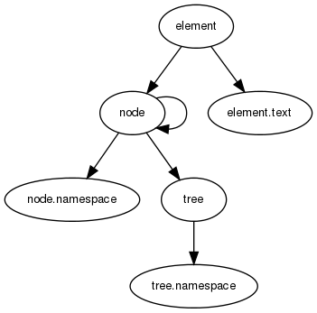

Functional Directives in Leo¶
leo directives as python callables
This document explores a concept for leo-editor which aims to collapse the distinction between leo directives and python callables.
Why would one want to do this?
To add even more power to Leo of course (-:
Here are some possible benefits:
- Makes it easier to create custom directives in a leo document.
- Adds a new dimension of scriptability to leo: directives are callables, they have access to the full power of python programming;
- Since callables can also be part of a module or namespace, it will be easier to group useful directives into libraries.
- A leo head or body can have multiple ‘views’ which are rendered as a result of evaluating its embedded code.
- Easily create text/tree transformers in leo using functional pipelines.
- Simplifies batch pre/processing/piping of data in leo nodes (for macros, templates, leoapps? ..)
- Makes it easier to create Domain Specific Languages [DSLs]
- <add more benefits>
Since this particular conception of leo directives mostly operate in a functional way on leo elements, we call them functional directives.
These types of directives are implemented as a python callable with a particular signature that gets registered by the leofunc.directive decorator.
Note
This is merely a simulation. We have not yet really considered compatibility issues, current implementation details of leo, or how the functional directives will work with the current style of leo directives.
This model only works in a much-simplified simulation of leo implemented in leofunc and tested in test_leofunc. Alas, I still do not converse well with Leo’s innards, so this really is (at this stage) just an extended thought exercise with code. If there is support for this concept, I would appreciate any help to integrate it more closely with leo.
Documentation has been generated from reStructuredText source markup using a combination of leo-editor and Sphinx
A Graphical Walkthrough¶
Since we are introducing a simplified model of leo, it may be useful to have a look at some of its elements in a graphical way ( a great excuse to use Sphinx’s cool graphing feature :-)
Text and Namespaces¶
The key thing about an element is that it stores raw text that can be parsed. If correctly parsed, it can be evaluated in the context of two python namespaces (the node-specific or ‘local’ namespace and the tree namespace, which is commonly accessible or ‘global’ to all elements in the tree.

The Analytical Outcome¶
When an element is created its text is parsed to populate its directive, code and data attributes.
![digraph d {
node [fontsize=8, fontname=Helvetica];
"element" -> "node";
"element" -> "element.text";
"element" -> "element.directive";
"element" -> "element.code";
"element" -> "element.data";
"node" -> "node";
"node" -> "node.namespace";
"node" -> "tree";
"tree" -> "tree.namespace";
}](_images/graphviz-5ca7a00b492ab5461843456491e375f7c5672ec4.png)
![digraph e {
node [fontsize=8, fontname=Helvetica];
"node" -> "head";
"head" -> "head.directive";
"head" -> "head.code";
"head" -> "head.data";
"head" -> "head.text";
"node" -> "body";
"body" -> "body.directive";
"body" -> "body.code";
"body" -> "body.data";
"body" -> "body.text";
"node" -> "node";
"node" -> "node.namespace";
"node" -> "tree";
"tree" -> "tree.namespace";
}](_images/graphviz-e43307f9e689abf0781c458cb1d95c12813e041c.png)
Usage Patterns¶
A leo functional directive has two tentative forms:
The first is the single line version:
@<directive> <code>
The second form is for block or suite versions and are possible only for body elements:
@<directive>
<code>
@
<data>
The <directive> is implemented as a python callable that is either in a leofunc.Tree.namespace or in a leofunc.Node.namespace. Heads and bodies share a common leofunc.Node.namespace.
In the single line version of a directive, <code> is a string that follows the <directive> and is terminated by \n.
In the body version, <code> consists of all \n terminated strings which extend from the end of the first line (containing the directive) and finally terminate with \n@\n. The <data> section is everything that follows.
Obviously, we can only have the single line version in a head (or headline), but both forms can happily exist in the body of a node.
Implementation¶
A leo functional directive is implemented as a python callable returning a callable accepting a leo element.
A leo element is an instance of leofunc.Element (a head or a body object) contained in a leofunc.Node instance.
This basic example defines a function func which implements a directive @elem registered by the leofunc.directive decorator. The purpose of this directive is to simply return the element from which it is called:
@directive('elem')
def func(*args, **kwds):
def _func(element):
return element
return _func
Note
To create a directive which takes optional arguments is to define both *args and **kwds or just **kwds. Note that we cannot presently define funcs which do not take parameters. Even if optional args or kwds are not eventually used in the function, this specific signature is required for this implementation.
There is a more concise but less readable lambda version:
func = directive('elem')(lambda *args, **kwds: lambda element: element)
We could use this directive in a leo tree as follows:
+-- root
|
+-- @elem
|
+-- @elem(a,b,c='value')
|
+-- @elem
|
but it’s not very useful at this stage since evaluating this directive will always return the head object for each case.
Tutorial¶
Now to do something useful: the obligatory hello world as a leo functional directive.
In a directory containing leofunc.py fire up python or ipython and enter this:
>>> from leofunc import Node, directive
>>> @directive('hello', 'hello-expr')
... def eval_hello(world):
... def _eval_hello(element):
... return 'hello %s' % world
... return _eval_hello
...
>>> n = Node("@hello('leo')")
>>> n
<Node [@hello('leo')]>
>>> n.head.directive
"hello('leo')"
>>> n.head.code
''
>>> n.head.data
''
>>> n.head.text
"@hello('leo')"
>>> n.head.type
'hello-expr'
>>> n.head.view
hello leo
>>>
Illustrative Examples¶
The following examples of custom functional directives are implemented in leofunc.py and tested in test_leofunc.py. Both files include further examples and tests of other leo directives. Of course, you can just look at the code section of code.leo.
@py and @pyc¶
Let’s start with some code:
>>> from leofunc import Node
>>> node = Node(head='@py 1+1+a', body='@pyc a=2')
>>> # we render body first to populate node.namespace
>>> # and give the head access to the 'a' variable
>>> node.body.render()
>>> node.head.directive
'py'
>>> node.head.code
'1+1+a'
>>> node.head.data
''
>>> node.head.view
4
>>> node.body.directive
'pyc'
>>> node.body.type
'py-suite'
>>> node.body.code
'a=2'
>>> node.body.view
>>> assert 'a' in node.namespace
>>>
In this case, we have defined a py-expr or python expression for the head of a node and a py-suite or python code block for its body.
It may be useful to briefly look into the implementation of @py
@directive(symbol='py', type='py-expr')
def eval_py_expression(**kwds):
""" creates and registers a @py directive
"""
def _eval_py_expression(element):
namespace = element.get_namespace(**kwds)
return eval(element.code, globals(), namespace)
return _eval_py_expression
The @directive decorator registers this function in a global dictionary called DIRECTIVES. The eval_py_expression function takes optional keyword arguments which update the namespace and returns a function which operates on a leo element. This is the signature for a leo functional directive. It must (as a matter of mere implementation) accept only elements, which are the typical subcomponents of a LeoNode (e.g. head and body). This is not a loss since element-level code can theoretically climb up or down the tree and access any other node.
The @py directive which allows us to evaluate arbitrary python expressions which may or may not return data and treat parts of a leo outline as a kind of program:
+-- root
|
+-- @py sum(child.head.view for child in node.children)
| |
| +-- @py len(node.parent.children)
| |
| +-- @py(a=1) 1 + a
| |
| +-- @py 100
If we were to evaluate or view the @py sum(..) node we would get 105 as an int result. One can imagine uses along the lines of a tree-based spreadsheet, command-tree, script collection, etc..
Perhaps the above example looks wordy, but that’s because we’re trying to be explicit and illustrative of different possible forms. The @csum directive, which is defined later in this section, implements a custom child-summing function which allows for a more concise style.
The other functional directive that is being used above is @pyc:
@directive('pyc', 'py-suite')
def eval_py_suite(**kwds):
""" creates and registers an @pyc directive
"""
def _eval_py_suite(element):
exec element.code in element.node.namespace
return _eval_py_suite
@pyc creates a python suite or block of code which gets executed in the node’s namespace.
Note
As you have probably noticed the implementation of this concept embraces eval and exec of arbitrary code in a leo tree. Although this has its dangers, code evaluation is an explicit request from the user who should know that running bits of a leo tree is as dangerous as running other people’s python code.
@imports¶
@imports updates the tree.namespace with objects and data which are accessible by all instances of LeoNode.
A shortened synonym for this directive is @pg or python-global.
All LeoElements have access to the @imports node’s namespace during the evaluation or execution of code. It is implemented as follows:
# evaluator functions as directives
@directive('imports', 'py-imports')
def eval_py_imports(**kwds):
def _eval_py_imports(element):
element.node.tree.namespace.update(kwds)
exec element.code in element.node.tree.namespace
return _eval_py_imports
We see that the block of python code is exec‘ed in the tree namespace.
@rss¶
Here’s a trivial example of a directive which dumps an rss feed into the default view
@directive('rss', 'rss-feed')
def eval_rss(**kwds):
""" creates and registers an @rss directive
"""
def _eval_rss(element):
import urllib
feed = urllib.urlopen(element.code).read()
return feed
return _eval_rss
We can then use this directive as follows:
+-- root
|
+-- @rss http://planet.python.org/rss10.xml
|
|
@pipe¶
We would like to introduce @pipe which look like this:
@pipe node.children | sorted | to.children
which is exactly equivalent to:
@py to.children(sorted(node.children))
this should just work as well:
@py node.children.sort()
Of course, you could just wrap all the above functionality into a single directive and call it @sort:
@sort
Look in test_leofunc.py for further examples of @pipe usage.
@csum¶
Following from the earlier @py example, we create a custom @csum directive which can be used this way:
+-- root
|
+-- @csum sandwhich
| |
| +-- bread = 100
| |
| +-- beetroots = 16
| |
| +-- pigeon = 20
|
The @csum node renders (or evaluates) to 136 by creating a dictionary called ‘sandwhich’ in node.namespace and summing its values. This directive is implemented in this messy function:
@directive('csum', 'csum-expr')
def eval_csum(**kwds):
def _eval_csum(element):
sumd = lambda d: sum(d[k] for k in d)
if element.code:
d = element.node.namespace[element.code] = {}
else:
d = {}
lst = []
for child in element.node.children:
head = child.head.view
lst.append(head)
body = child.body.view
lst.append(body)
assigns = '\n'.join(lst)
exec assigns in d
del d['__builtins__']
return sumd(d)
return _eval_csum
Known Issues¶
Poor integration with Leo¶
Open Questions:
- Is this a good idea?
- If so, how to properly introduce leo directives into leo: at what level of integration and in what form?
- Script/Button/Command?
- Seamlessly?
- If not, then perhaps different symbol to not confuse with current implementation?
- Drop it. (-:
In any case, initial efforts to integrate the concept into Leo proper have only produced a small number of very limited leo scripts which are contained in code.leo:
tree transformations
s1: populates a proper leo node from a predefined tree (bug/feature: skips first node)
s2: attempt at a class-based version of s1
simulation
This is a nice way to see how leo nodes defined with functional directives would look like. The leo script recursively iterates over the child nodes and creates functional nodes for testing.
Whitespace prohibited in a directive call¶
If you are passing arguments to a directive you cannot include whitespace in the call:
@py(a=1, b=2)
This is due to current limitations of the parser (any help would be appreciated :-)
You will have to write it this way:
@py(a=1,b=2)